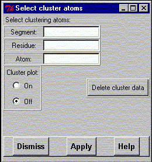

**************************************************************************
Calculate cluster widget command
Leif Laaksonen CSC 1996
**************************************************************************
Calculate for display a cluster matrix displaying the root mean square (RMS) value, after a superimpose of the selected atoms over the frames in a trajectory.
Select the segment, residue and atoms defining the structure to be superimposed with the equivalent part in the other frames. After selecting the atoms press the Apply button to perform the calculation over the frames.
After the calculation the matrix can be displayed by selecting the "Cluster plot on" option.
To free the reserved matrix space press the "Delete cluster data" button.

Line command option: see calculate
**************************************************************************
LUL/1996
**************************************************************************